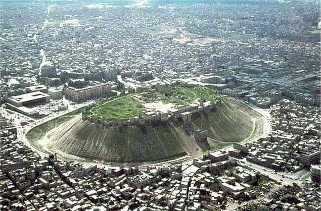
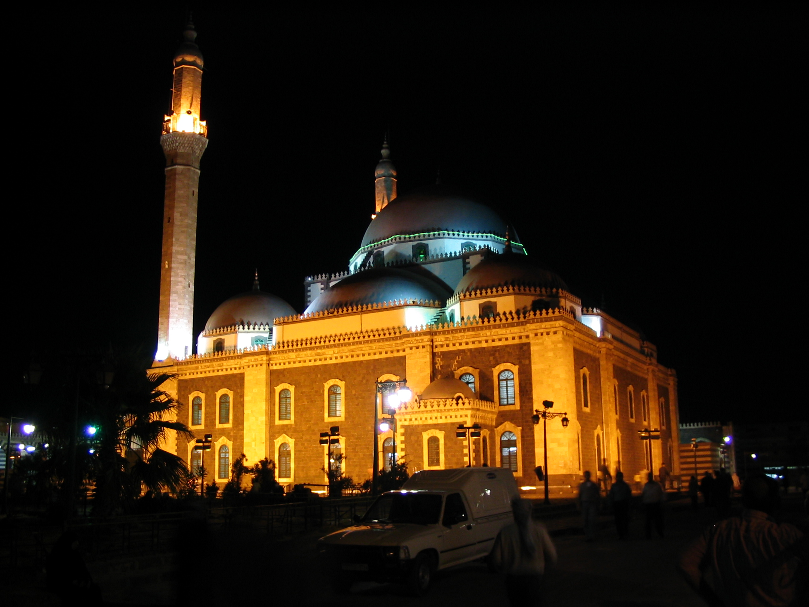
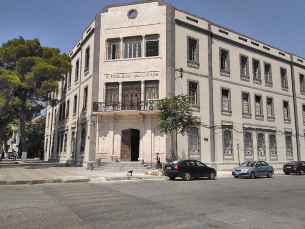
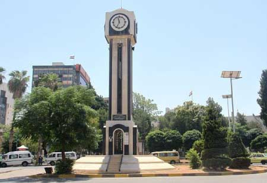

محافظة حمص هي ثالث أكبر محافظة في سوريا من حيث المساحة، وتعتبر من أقدم المدن المأهولة في العالم. تقع في وسط البلاد وتبلغ مساحتها حوالي 42,223 كم²، ويُقدّر عدد سكانها بنحو 2 مليون نسمة. تتميز بموقع استراتيجي يربط بين الشمال والجنوب والشرق والغرب السوري. تشتهر حمص بالزراعة وخاصة زراعة الزيتون والقطن والحبوب، وبالصناعة مثل تكرير النفط وصناعة الادوية
منم اهم المناطق الاثرية: قلعة حمص
ساعة حمص
جامع خالد ابن الوليد
متحف حمص
   